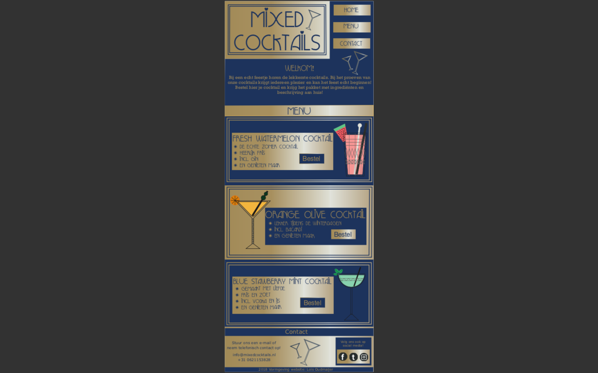

Eindoplevering - Vormgeving
Situatie
Dit was een opdracht voor het vak Vormgeving in leerjaar 1 CMD. De docent die ik hiervoor had was Martha Lauría Baca. De opdracht was om een single page website vorm te geven voor mijn favoriete voedselproduct in een passende ontwerpstijl naar keuzen. Ik had cocktails gekozen met de stijl Art Deco.
Taak
Dit was een individuele opdracht dus ik werkte alleen. Ik heb zelf alles bedacht en ontworpen. Het doel dat ik wilde bereiken van om te oefenen met de adobe programma’s om mijn concept vorm te geven. Ik heb daarna mijn keuzes voor het ontwerp onderbouwd.
Activiteiten
We zaten bij dit vak veel op Pinterest om inspiratie op de doen over de stijlen en het product. Ook deed je onderzoek naar 3 stijlen en koos je daaruit je definitieve. Hetzelfde bij de producten. Ook maakt we super veel schetsen van je product en stijl om zo een goed ontwerp te creëren.
Resultaat
De opdracht ging goed en ik vond hem leuk om te doen. Ik had wel wat meer onderzoek moeten doen naar de stijlen. Het ontwerp zag er goed uit. Ik heb het vak uiteindelijk met een 7 afgerond.
Reflectie
Ik vind mij ontwerp zelf mooi geworden en ik heb er een duidelijke onderbouwing bij staan. Ik had toen de feedback gekregen op de vormgeving zelf. Alleen de keuzes voor mijn concept/ontwerp had ik goed onderbouwd.